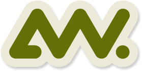

This is the start point for some incredible unuseful projects. This site is powered by AngularJS and Bootstrap. With support from nodejs, npm and grunt.

Here you find every link to a single project.